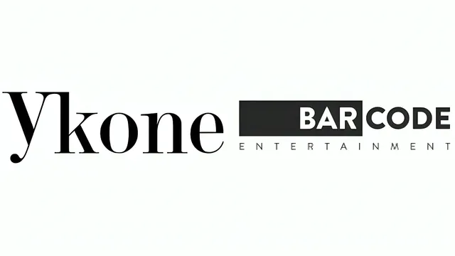

Experience
Project management, GTM strategy, and growth marketing across five markets.
Professional Experience
-
Social Media Producer
Arizona State University
- Maintained ASU's brand identity across channels by planning and publishing content in Canva
- Informed content strategy by tracking campaign performance across platforms
-
Project Management Consultant
EuropeLab · Private Label
EuropeLab is a private-label manufacturing and distribution consultancy supporting beauty, wellness, and spa brands expanding into new markets.
- Closed a 20–25% lead-leakage gap by mapping CRM bottlenecks and redesigning the onboarding workflow
- Shaped market-expansion decisions on Nordic, medical, and wellness spa segments by synthesizing 15+ stakeholder interviews into decision-ready insights
- Aligned client stakeholders on next steps by presenting expansion scenarios covering channel prioritization, feasibility, and risk
-
Marketing & Strategy Intern
Hexafort, Inc.
Hexafort, Inc. is a cybersecurity solutions provider serving multinational enterprises across regulated industries.
- Lifted segmentation precision by 30% and cut operational inefficiency by 25% by building a go-to-market strategy and performance dashboards from scratch
- Built a $100,000+ sales pipeline by running cold calling, lead onboarding, and email sequences through Apollo and Lemlist
- Kept enterprise clients audit-ready by managing SOC 2, ISO, and HIPAA compliance requirements across regulated markets
- Closed cross-cultural onboarding gaps by aligning cybersecurity messaging for enterprise clients across global markets
-

Growth Marketing Manager
Barcode Entertainment · Strategic Brand Solutions
Barcode Entertainment is a strategic brand solutions agency running integrated marketing campaigns for multinational brands, including AB InBev and BookMyShow.
- Delivered $120,000 in profit on AB InBev's Echoes of Earth activation at a 60% gross margin by adapting creative strategy to local cultural preferences across markets
- Scaled brand reach by managing a 200+ creator network across countries on $45,000+ in budget
- Informed market-entry strategy by delivering competitive research and insights across global markets
- Earlier, as Marketing Specialist: generated $70,000 in revenue at a 50%+ margin for Vurse (a Dubai-based client) and a 41.5% margin on a BookMyShow campaign for musician Prateek Kuhad by coordinating 100+ client relationships
-
Marketing Manager
Tierra Tours and Travels Private Limited
Grew website traffic 20% through SEO and content optimization, expanded lead generation across 15+ international markets, and cut manual posting effort 40% by automating campaigns with Buffer and Mailchimp.
-
Early Internships
Exchange4Artist & Soulflower Co Ltd
First marketing roles: content scheduling and audience engagement tracking at Exchange4Artist (Oct–Nov 2018), and social content posting and community engagement at Soulflower Co Ltd (Jan–Mar 2018).
Leadership at Thunderbird & ASU
Every role and project I've taken on at Thunderbird School of Global Management and Arizona State University, grouped together. The four roles below ran concurrently, each a part-time commitment alongside full-time coursework.
-
Research Analyst
Arizona State University
Arizona State University is a public research university and Pooja's graduate institution, home to the Thunderbird School of Global Management.
- Informed Prof. Robert Grosse's research on whether autocratic governments adopt less open trade and investment policies than democracies by analyzing cross-country governance data
- Measured how foreign funding affects company performance by building firm-level datasets across Cambodia, Indonesia, Laos, Thailand, and Vietnam
-

VP of Marketing
International Project Managers Club · Thunderbird School of Global Management
- Grew engagement 45% from a standing start by launching and running the club's LinkedIn and Instagram pages in Canva
- Led a 3-person marketing team as VP of Marketing, setting content and brand direction across channels
-
Social Media Producer
Arizona State University
- Picked up Wrike, Airtable, Hootsuite, Adobe Premiere Pro, and Illustrator on the job, on top of existing paid-social experience in Meta Ads, LinkedIn Ads, and Google Ads
- Once the Wrike-based workflow was in hand, mentored other student producers through the process and took over time-sensitive postings during live coverage
-
Marketing Specialist
DAS TOR (Thunderbird's media club) · Thunderbird School of Global Management
- Drove attendance for campus-wide events by creating and running promotional marketing campaigns